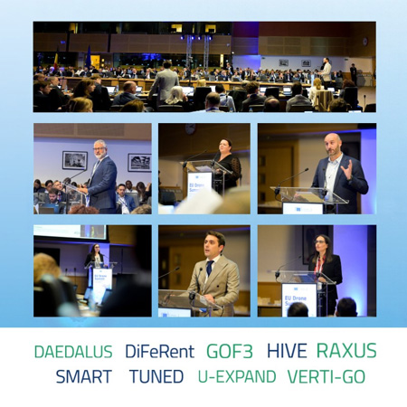
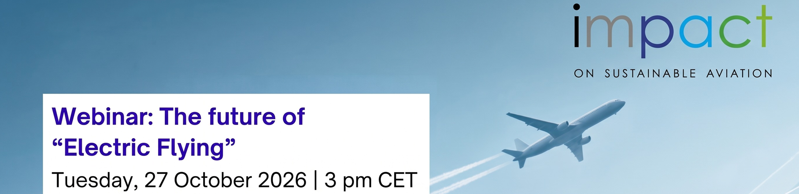

Noticias del Málaga IAM Open Forum, del proyecto europeo VERTI-GO y de la propuesta a Ports 4.0 AIRLINK PORTS, y en general sobre todo lo relacionado con la movilidad aérea innovadora que se está desplegando en Málaga.

Sesión dedicada a los nuevos proyectos de investigación sobre drones y movilidad aérea innovadora. Imagen: SESAR Joint Undertaking.
El proyecto europeo VERTI-GO ha participado en Bruselas en la principal cita de la Comisión Europea para revisar el progreso de la política europea de drones y definir los próximos pasos hacia operaciones seguras, escalables y competitivas.
Jolana Dvorska, directora de Technology Strategy & Innovation de Honeywell Aerospace, presentó VERTI-GO durante una sesión moderada por Cengiz Ari, de SESAR Joint Undertaking. El proyecto compartió sus objetivos y avances con responsables públicos, reguladores, industria y comunidad investigadora reunidos en el EU Drone Summit.
Dos jornadas para pasar de la estrategia al despliegue
El encuentro, organizado por la Comisión Europea con el apoyo del Ministerio de Transportes de Bélgica y SESAR Joint Undertaking, se celebró los días 9 y 10 de noviembre en el Palacio de Egmont de Bruselas. La organización esperaba a más de 300 participantes.
La primera jornada se centró en los retos técnicos, reglamentarios y operacionales que todavía deben resolverse para que las operaciones con drones puedan escalar con seguridad en Europa. La segunda abordó la dirección futura de la política europea de drones, la competitividad industrial, la seguridad y las capacidades tecnológicas. El objetivo común: avanzar desde un marco regulatorio y político ya consolidado hacia una implantación más rápida y un mercado operativo.
La investigación europea entra en una nueva fase
SESAR aprovechó la cumbre para mostrar cómo la inversión europea en investigación e innovación comienza a traducirse en soluciones prácticas para integrar drones y nuevas aeronaves en el espacio aéreo. Entre los principales resultados presentados estuvieron la quinta edición del concepto de operaciones U-space, desarrollado por CORUS FIVE, y el manual de implantación de U-space de U-ELCOME.
VERTI-GO participó junto con otros cuatro proyectos de investigación industrial —GOF3, RAXUS, DAEDALUS y U-EXPAND— y cuatro proyectos de investigación exploratoria. Las iniciativas trabajan en ámbitos como la gestión dinámica del espacio aéreo, las autorizaciones digitales de vuelo, la automatización y la integración de nuevos usuarios del espacio aéreo.
Qué aporta VERTI-GO
VERTI-GO desarrolla y valida soluciones para integrar con seguridad la movilidad aérea innovadora en el ATM y el U-space actuales. Su trabajo se concentra en cuatro áreas:
Planificación de vuelo y gestión de vertipuertos, incluida la reserva de recursos de aterrizaje.
Operaciones iniciales bajo reglas de vuelo visual con una aeronave eléctrica de despegue y aterrizaje vertical tripulada en España.
Procedimientos para entornos complejos, incluidos el espacio aéreo controlado y el U-space.
Automatización avanzada para apoyar los servicios ATM/U-space de aeronaves tripuladas y no tripuladas.
El proyecto estuvo además presente en la exposición de la cumbre, en el estand 13 del atrio, como una de las ocho iniciativas de SESAR seleccionadas para acercar sus soluciones a los participantes.
De Bruselas a Málaga
La participación en el EU Drone Summit conecta directamente con el trabajo que VERTI-GO desarrolla en Málaga. El proyecto prevé validar en España operaciones tripuladas con el eVTOL Valo de Vertical Aerospace y trabaja también en la integración de operaciones no tripuladas de carga en entornos ATM y U-space. Málaga será uno de los escenarios donde estos conceptos deberán demostrar que pueden convivir con la aviación convencional de forma segura y eficiente.
Un análisis del webinar de IMPACT sobre electrificación aeronáutica

Introducción
La electrificación de la aviación ya no es una promesa lejana, sino una realidad en desarrollo acelerado. En un reciente webinar organizado por IMPACT, cuatro líderes de la industria se reunieron para discutir el estado actual y las perspectivas del vuelo eléctrico. El panel, moderado por Michael Hallaby (MUFG), contó con la participación de Jane Keith (SVP Operations de SLI), Jan Petter Steinland (Autoridad de Aviación Civil Noruega), Simon McNamara (Loganair) y Simon Newitt (Beta Technologies).
La conversación reveló que, aunque la tecnología funciona y los ensayos son exitosos, el camino hacia la comercialización a escala requiere paciencia estratégica, colaboración multisectorial y un enfoque pragmático en la certificación.
El Estado Actual: Tecnología Probada, Certificación en Proceso
Todos los panelistas coincidieron en un punto fundamental: la tecnología eléctrica para aviación ya funciona. Beta Technologies ha acumulado más de 250,000 millas náuticas de vuelo, y los ensayos realizados en Noruega y Escocia han demostrado que volar aeronaves eléctricas es, en palabras de Simon Newitt, "notablemente poco dramático" — exactamente lo que se necesita escuchar antes de la certificación.
Sin embargo, el cuello de botella actual no es la tecnología en sí, sino en el progreso del proceso de certificación. Beta Technologies ha adoptado un enfoque gradual: primero certificaron su hélice con Hartzell en 2025, ahora están en proceso de certificar su motor bajo Part 33, luego su aeronave de despegue convencional bajo Part 23, y eventualmente su eVTOL. Este enfoque pragmático refleja la filosofía de la industria: probar a través de operaciones reales y escalar responsablemente, sin perseguir el hype.
Jan Petter Steinland enfatizó que esto es una transformación del ecosistema completa, no solo el desarrollo de una nueva aeronave. Se necesita que todo el ecosistema esté preparado: infraestructura de carga, regulación del espacio aéreo, integración con operaciones no tripuladas, y aceptación pública.
Mercados Iniciales: Carga, Medicina y Defensa
Contrario a la narrativa popular centrada en los air taxis para pasajeros, los panelistas revelaron que los mercados iniciales son más pragmáticos:
Carga y Logística
El mercado de carga es el punto de entrada natural. Beta Technologies ha demostrado operaciones de alta cadencia (9 vuelos por día) con cargas rápidas de 35 minutos, transportando 500 kg con volumen equivalente a una furgoneta Sprinter. Socios como UPS y Amazon (inversor en Beta) están prestando atención a la economía, especialmente ante la congestión crónica de las carreteras.
Sector Médico
El transporte de órganos, productos sanguíneos, radiofármacos y tratamientos contra el cáncer representa un mercado de alto valor. Beta realizó recientemente una demostración de entrega de órganos con United Therapeutics, abriendo oportunidades para llevar atención médica a comunidades rurales.
Defensa
El interés militar es significativo. Beta participó en el ejercicio Aurora de la OTAN en Suecia, simulando distribución logística en entornos disputados. Además, anunciaron en Farnborough una plataforma autónoma híbrida eléctrica desarrollada con GE para el mercado de defensa.
El Papel de Noruega: Test Arena Internacional
Noruega se ha posicionado como líder en la facilitación de ensayos de aviación eléctrica. A través de una colaboración entre la Autoridad de Aviación Civil y Avinor (red estatal de aeropuertos), establecieron un test arena internacional que ha sido fundamental para el aprendizaje sistémico.
El programa con Beta Technologies y Bristol incluyó 126 vuelos entre dos ciudades, con un enfoque escalonado que culminó en operaciones IFR completas. Se instalaron cargadores rápidos permanentes donde la red eléctrica lo permitía, y estaciones móviles donde no. El uso de energía hidroeléctrica (más del 90% de la electricidad noruega) garantiza que las operaciones sean verdaderamente verdes.
Los aprendizajes van desde detalles técnicos (longitud de cables, diseño de estaciones de carga) hasta cuestiones sistémicas (organización del espacio aéreo, integración con drones). Jan Petter Steinland subrayó que no hay alternativa al aprendizaje holístico real para acelerar la innovación.
Financiación y Liquidez: El Rol de los Lessors
Jane Keith de SLI destacó el papel crucial de los lessors en asumir riesgo temprano. SLI, con pedidos de hasta 210 aeronaves eléctricas y drones de carga, actúa como puente entre los OEMs y los operadores, absorbiendo parte del riesgo inicial para que los operadores no tengan que hacerlo solos.
La liquidez de los activos eléctricos es sorprendentemente buena, según Keith, debido a la multiplicidad de casos de uso: carga, médico, defensa, ayuda en desastres, rutas regionales. Esta versatilidad reduce el riesgo para los inversores.
El interés del mercado es amplio: startups, aerolíneas regionales, grandes carriers logísticos. "Todos están mirando esto", afirmó Keith, porque todos reconocen que esta tecnología transformará sus modelos de negocio y bases de costos.
¿Por Qué Eléctrico? Costos y Sostenibilidad
La pregunta obvia es: ¿por qué electrificar si el impacto en la descarbonización es limitado comparado con la aviación de largo recorrido?
La respuesta es doble:
Reducción de costos operativos: Con los precios del combustible convencional subiendo 130% en Europa (por razones políticas, no de suministro), la electricidad ofrece estabilidad y ahorro. Además, el mantenimiento de motores eléctricos es significativamente menor que el de motores convencionales.
Sostenibilidad a largo plazo: Aunque la política actual puede estar restando énfasis a la sostenibilidad, el cambio climático es evidente (clima extremo en Escocia, por ejemplo). La presión por descarbonizar volverá, y las aeronaves eléctricas estarán listas.
Jan Petter Steinland hizo una analogía poderosa: en Noruega, el 98.8% de los autos nuevos registrados en septiembre de 2026 son eléctricos. Lo mismo está sucediendo en el sector marítimo con los ferries. Una vez que cruzas a lo eléctrico, nunca vuelves atrás.
Perspectivas de Escalado
¿Cuántas aeronaves eléctricas veremos en los próximos 5-10 años? La respuesta honesta es: no lo sabemos, pero deberíamos estar preparados para sorprendernos.
El 40-45% de los vuelos actuales son menores a 1,500 km. Con híbridos eléctricos capaces de volar 500 km en el futuro cercano, y eventualmente 1,000-1,500 km, se abre un mercado enorme. Además, las nuevas tecnologías permiten operaciones que antes no eran posibles, creando mercados completamente nuevos.
Simon McNamara señaló un dato revelador: en EE.UU. hay 5,000 aeropuertos, pero solo el 5% maneja el 75% del tráfico. En Europa, el 70% de la población vive cerca de un aeródromo. Hay infraestructura aeroportuaria subutilizada en abundancia, lista para ser reactivada por aeronaves eléctricas que pueden operar desde pistas más cortas y con menos infraestructura.
Los Deseos de Navidad de la Industria
Cuando se les preguntó qué pedirían para Navidad, los panelistas fueron unánimes: más comunicación y compromiso gubernamental.
Jane Keith quiere que continúe el progreso y que la información llegue a los usuarios finales.
Jan Petter Steinland desea avanzar el trabajo, mostrarlo a más personas e involucrar más cuerpos.
Simon McNamara pide gobiernos energizados sobre el potencial de la nueva tecnología.
Simon Newitt está emocionado por la segunda fase del programa EIPP de la FAA, que permitirá operaciones comerciales simuladas antes de la certificación.
Conclusión
El webinar de IMPACT dejó claro que la aviación eléctrica no es una cuestión de "si", sino de "cuándo" y "cómo". La tecnología funciona, los ensayos son exitosos, y los mercados iniciales están identificados. Lo que se necesita ahora es paciencia estratégica, colaboración entre todos los stakeholders (OEMs, operadores, reguladores, financieros, gobiernos y usuarios finales), y un enfoque pragmático en la certificación.
La electrificación de la aviación no reemplazará toda la industria de la noche a la mañana, pero abrirá nuevos mercados, reducirá costos operativos, y contribuirá a la descarbonización del sector. Como dijo Jan Petter Steinland: "No sabemos cuán rápido puede escalar. Deberíamos estar preparados para ser sorprendidos".
Mientras tanto, el trabajo continúa: ensayos, certificación, desarrollo de infraestructura, y mucha comunicación. El futuro del vuelo eléctrico está llegando, y será más pragmático, más diverso y más impactante de lo que muchos esperan.
Parte del equipo español de VERTI-GO, con representantes de AEROSOLUTIONS y ENAIRE, ha estado presente en DRONExpo para compartir los avances del proyecto y analizar los retos operacionales del sector.
Durante la jornada seguimos de cerca dos mesas de debate fundamentales coordinadas por la Agencia Estatal de Seguridad Aérea (AESA):
SAIL III: operaciones con drones de tamaño medio sobre zonas pobladas. Moderada por Roberto Gándara Ossel, jefe de la División UAS de AESA, junto a ponentes de FuVeX, CATUAV y ETRAIR (Grupo ETRA). La mesa abordó la aeronavegabilidad, las licencias y la integración de operaciones de riesgo medio en entornos poblados.
Retos y límites en operaciones BVLOS hasta 120 metros de altitud. Moderada por Laura López, jefa de Servicio de Operaciones UAS de AESA, con la participación de Daniel García-Monteavaro, de ENAIRE, y Víctor Manuel Gordo Arias, experto en sistemas CNS/ATM en INECO. El debate se centró en el desarrollo del U-space y la evolución de los vuelos más allá de la línea de vista visual.
Seguimos sumando capacidades, innovación y coordinación institucional para acelerar el despliegue seguro del U-space y la movilidad aérea avanzada.
Las noticias de la AAM de esta semana plantean más preguntas que respuestas.
Por Borja Blond Fdez. de Arroyabe.
Zipline recaudó 1.500 millones de dólares, pero ¿puede su sistema de entrega suspendida operar de forma segura y económica en entornos urbanos complejos?
Joby está generando ingresos a través de Blade, defensa y logística autónoma. ¿Es esta una diversificación inteligente mientras la economía del eVTOL de pasajeros sigue siendo incierta?
AutoFlight completó un vuelo autónomo en formación de cinco aeronaves. China avanza rápidamente con aviones grandes y asequibles, pero la certificación internacional y la navegabilidad continua siguen siendo las verdaderas pruebas.
Eve consiguió dos pedidos firmes, pero el programa aún necesita demostrar vuelo a escala real desde el alar. La experiencia en aviación de Embraer podría convertir a Eve en un fuerte candidato, una vez que la aeronave demuestre su valía.
Wisk abrió un vertiport de prueba con un propósito técnico creíble. Sin embargo, en toda la industria, una zona de aparcamiento con cargadores no debería llamarse automáticamente infraestructura revolucionaria.
Archer e ITA Airways explorarán las operaciones de taxi aéreo en Italia. Es un primer paso interesante, pero la certificación, la infraestructura, la aceptación pública y la economía decidirán si se convierte en un servicio real.
Mi opinión sigue sin cambios: UAS pesados, misiones de carga, logística y servicios públicos ofrecen el caso de negocio a corto plazo más claro. El eVTOL de pasajeros tendrá que demostrar que puede operar de forma segura y rentable sin subvenciones permanentes.
Miembros del equipo de VERTI-GO hemos estado hoy en Colonia, en la primera jornada del EASA Innovative Air Mobility Implementation Forum 2026, en la sede de la Agencia de la Unión Europea para la Seguridad Aérea.
Bajo el lema «From rules to reality», el primer día ha repasado cómo pasar del marco regulatorio a operaciones reales: dónde está Europa, qué tiene que pasar en los próximos cinco años para escalar la movilidad aérea innovadora, las operaciones BVLOS, la visibilidad de todos los usuarios del espacio aéreo y el marco de certificación de los eVTOL. En el panel de apertura participó Odys Aviation, fabricante del dron de carga Laila y socio de VERTI-GO.
Mañana, miércoles 28 de octubre, el foro continúa con estas sesiones:
09:00 · Apertura de la jornada, con Daan Dousi, jefe del departamento de IAM de EASA, y presentación del IAM Hub de EASA.
09:30 · Panel: del concepto a la autorización para despegar. Operadores y autoridades locales (Hamburg Aviation, Ayuntamiento de Dublín y Helicus) hablan de cómo poner en marcha los primeros servicios.
10:45 · Stream VTOL: de los primeros vuelos a las primeras operaciones, con ADAC Luftrettung, Urban V, Eve Air Mobility y Vertical Aerospace, fabricante del eVTOL Valo y socio de VERTI-GO. En paralelo, talleres sobre la certificación de proveedores U-space y las operaciones en alta mar.
13:00 · Contribución de la industria a la certificación eVTOL (EUROCAE, Ascendance, ASD), simplificación del U-space con EUROCONTROL y ensayos de UAS con la participación de Antidio Viguria (CATEC), moderador de uno de los paneles del Málaga IAM Open Forum.
14:00 · I+D para la entrada en servicio de los eVTOL (Leonardo, Politecnico di Milano, DLR y NLR) y armonización técnica del U-space, con Frequentis y EUROCONTROL, también socios de VERTI-GO.
15:30 · Cultura de seguridad compartida en la comunidad de la movilidad aérea innovadora.
16:15 · Más allá del piloto remoto: diseñar drones con alta automatización, con Amazon Prime Air, RigiTech, LBA y Pipistrel.
17:15 · Clausura, a cargo de Thibauld Jongen, director de Certificación de EASA.
Mañana arranca en Colonia el EASA Innovative Air Mobility Implementation Forum 2026, con el lema «From rules to reality: accelerating Innovative Air Mobility in Europe». Lo seguiremos con especial atención al stream de eVTOL.
Esto es lo que trae la primera jornada, el martes 27 de octubre:
09:35 · Apertura. Florian Guillermet, director ejecutivo de EASA, abre el foro hablando de la siguiente fase de la movilidad aérea innovadora en Europa.
09:55 · Panel: del marco regulatorio a la realidad operativa. Participan la Comisión Europea, el Ministerio de Transporte alemán, EUROCONTROL, FuVeX y Odys Aviation, socio de VERTI-GO.
11:00 · Panel: qué tiene que pasar en los próximos 5 años para escalar la IAM en Europa, con Vega Vertical Gateway, la Irish Aviation Authority, ERC System, STRADAai y Urban Ray.
13:00 · Taller: ampliar las operaciones BVLOS mientras se despliega el U-space, con la participación de AESA.
14:15 · Debate sobre la conspicuidad: cómo hacer visibles a todos los usuarios del espacio aéreo para que «lo que se ve, se pueda evitar».
15:45 · Stream VTOL: marco de certificación eVTOL. Volker Arnsmeier, Oswaldo López Blas y José Martín Sanz, de EASA, presentan el estado de la RMT.230, los medios de cumplimiento de la SC-VTOL y la aprobación de condiciones de vuelo para el permiso de vuelo. Es una sesión clave para entender el camino hacia la entrada en servicio de los eVTOL.
El miércoles el stream eVTOL continúa con paneles sobre primeras operaciones y vertipuertos, la contribución de la industria a la certificación y la I+D necesaria para la entrada en servicio.
La tarde del jueves 22 de octubre, el auditorio de The Green Ray (Link by UMA-ATech, Universidad de Málaga) acogió el primer encuentro abierto del foro y la presentación pública del proyecto europeo VERTI-GO.
Tras la bienvenida del Ayuntamiento de Málaga y de la Universidad de Málaga, el programa recorrió las dos caras de la movilidad aérea innovadora que llegará a Málaga:
El proyecto VERTI-GO, sus dos soluciones y los casos de uso previstos en Andalucía.
VALO, el eVTOL eléctrico pilotado de Vertical Aerospace: aspectos técnicos, certificación y puesta en servicio.
LAILA, el dron de carga de Odys Aviation: características, utilidad y entrada en servicio.
Panel «Movilidad aérea urbana», sobre los retos para que los primeros taxis aéreos con pasajeros lleguen a nuestras ciudades.
Panel «Logística aérea con drones», sobre las barreras normativas y las expectativas de las operaciones comerciales.
Gracias a los ponentes, a los moderadores y a todas las personas que se acercaron a The Green Ray. Este ha sido el primero de una serie de encuentros: iremos anunciando aquí los siguientes. Ver el programa completo.
Málaga ha acogido la primera reunión presencial del Institutional Advisory Board (IAB) de VERTI-GO, el proyecto europeo que prepara la integración de los eVTOL tripulados y los grandes drones de carga en el espacio aéreo.
Un Consejo Asesor de 41 miembros de 21 instituciones (autoridades y organismos públicos, industria, universidades y asociaciones profesionales) se reunió en The Green Ray (Link by UMA-ATech, Universidad de Málaga) para conocer el proyecto y ayudar al consorcio a orientar los próximos pasos.
Durante la mañana se presentaron:
El proyecto y el consorcio, a cargo de Honeywell, coordinador de VERTI-GO.
La Solución 1, con ITG: arquitectura de datos, plan de vuelo basado en trayectoria (tipo FF-ICE) y aseguramiento de los recursos de aterrizaje.
Los casos de uso de eVTOL y drones de carga y sus principales retos operativos, por Aerosolutions.
VALO, el primer proyecto europeo de eVTOL tripulado para pasajeros, de la mano de Vertical Aerospace.
LAILA, el dron de carga híbrido de largo alcance de Odys Aviation, y sus operaciones previstas en Europa en SAIL III/IV.
Dos mesas redondas, con autoridades (coordinada por AENA) y con la industria (coordinada por ENAIRE), y un foro abierto entre el consorcio y los miembros del IAB.
Los vuelos de validación de VERTI-GO están previstos para 2028 en Andalucía.
Gracias a todos los miembros del IAB por su tiempo y sus aportaciones, y a la Universidad de Málaga por acogernos.
Los socios del proyecto siguieron trabajando cara a cara en Málaga en una segunda jornada intensa y muy práctica.
Por la mañana, los equipos de la Solución 1 y la Solución 2 trabajaron por separado:
Plan de validación: para cada ejercicio se definieron sus objetivos, indicadores (KPI), calendario, limitaciones e hipótesis, y su aportación a los facilitadores comunes.
OSED: se debatió la descripción de los servicios y el entorno operativo para acordar los casos de uso y el método operativo de cada uno.
Por la tarde, los dos grupos trabajaron juntos:
Taller de planificación de vuelos: procesamiento de planes de vuelo y compartición de trayectorias.
Conclusiones: los responsables de cada solución presentaron el plan de validación acordado y la coordinación cerró la reunión con los próximos pasos.
Un paso más para que la movilidad aérea innovadora sea una realidad en Europa, y también en Málaga.
Los socios del proyecto han empezado hoy en Málaga una reunión de trabajo presencial, la semana en que se celebra el primer Málaga IAM Forum.
Durante la primera jornada, los equipos de las dos soluciones del proyecto trabajaron juntos durante todo el día. Por la mañana se repasó la marcha de VERTI-GO y se fijaron los objetivos de la reunión:
Avance del proyecto: situación actual y trabajo de normalización y regulación.
Los próximos seis meses: tareas, hitos, entregables y comunicación, y lo que se espera de la versión inicial del plan de validación.
Las dos soluciones, a examen: la Solución 1 (operaciones tripuladas en VFR con el eVTOL Valo) y la Solución 2 (integración en el ATM y el U-space en IFR, con el dron de carga Laila) presentaron el estado de su concepto de operaciones, sus especificaciones técnicas y su plan de validación, con los logros alcanzados y lo que falta para la versión inicial.
Por la tarde, la reunión se centró en tres piezas comunes a ambas soluciones:
Gestión de recursos de aterrizaje: cómo reservar vertipuertos y lugares de aterrizaje de contingencia.
Planificación de vuelo: el estado del concepto y cómo lo usará cada solución.
Arquitectura del sistema y habilitadores: qué elementos son comunes, cuáles específicos de cada solución y cómo alinearlos.
El jueves 22 de octubre, el proyecto se presentó en público en el primer Málaga IAM Forum. Ver el programa del foro.
Más allá de certificar nuevas aeronaves y construir vertipuertos, queda un reto clave: integrarlas con seguridad en el ATM y el U-space actuales.
Ese es el reto que asume VERTI-GO (Vertical Operations ready to GO), una Acción de Innovación de Horizonte Europa / SESAR 3 de 36 meses (junio 2026 – mayo 2029), coordinada por Honeywell, con unos 5 millones de euros de financiación europea y 11 socios más 3 entidades afiliadas.
Solución 1 · Operaciones IAM tripuladas bajo VFR (TRL 4 → 7). Planificación de vuelo digital, reserva de vertipuertos y de lugares de aterrizaje de contingencia, y automatización ATC/FIS, que culminan en vuelos de demostración reales en España con el eVTOL Valo de Vertical Aerospace entre Málaga y Marbella (helipuerto de Puerto Banús).
Solución 2 · Ecosistema ATM y U-space para la IAM bajo IFR. Operaciones de carga pilotadas a distancia SAIL III–IV con el Odys Laila en el corredor Almería–Málaga, acceso al U-space en espacio aéreo controlado, el concepto de torre remota digital y la integración de la IAM en espacios aéreos terminales complejos, validada mediante simulaciones de la TMA de Londres.
Cinco resultados principales:
Un marco de planificación de vuelo para la IAM (tipo FF-ICE).
Un marco de reserva de vertipuertos y lugares de aterrizaje de contingencia.
Procedimientos operativos para seis entornos, desde VFR no controlado hasta IFR en espacio aéreo controlado complejo.
Servicios ATM/U-space para la IAM en espacio aéreo de baja altitud.
Automatización avanzada de cabina y de estación de control en tierra.
Hoja de ruta: conceptos en 2026–27, simulaciones conectadas y ensayos SAIL IV en 2028, y vuelos de prueba del Valo en 2028–29.
Fabricantes, operadores de infraestructura, administraciones y centros de investigación hablarán de cómo hacer realidad la movilidad aérea innovadora.
Abren el encuentro Alicia Izquierdo García (Ayuntamiento de Málaga) y Juan Carlos Rubio Romero (Vicerrector de la Universidad de Málaga). Carmen González (ITG) presentará el proyecto VERTI-GO, Martin Jakes (Vertical Aerospace) el eVTOL Valo y Patrick Buckles (Odys Aviation) el dron de carga Laila.
El panel «Movilidad aérea urbana», moderado por Antonio Mota Sandoval (AEROSOLUTIONS), contará con Pablo López Loeches (AENA), José Ignacio Rodríguez Modroño (BLUENEST) y Elisa Heras Sevilla (ACS-Iridium).
El panel «Logística aérea con drones», moderado por Antidio Viguria (CATEC), contará con David González Campos (Torre de Málaga · ENAIRE), Eduardo Torres Pinilla (Ayuntamiento de Madrid) y Víctor Gordo Arias (INECO).
Un espacio abierto y permanente para difundir los avances de la movilidad aérea innovadora: tecnología, regulación, aceptación social y plazos realistas.
El foro nace de la mano de VERTI-GO (Vertical Operations ready to GO), un proyecto europeo de 36 meses financiado por la Empresa Común SESAR 3 en el marco de Horizonte Europa. Su objetivo es integrar de forma segura las nuevas aeronaves en el espacio aéreo actual, junto al resto de usuarios.
En España, VERTI-GO trabajará sobre dos corredores:
Aeropuerto de Málaga – Marbella: transporte de pasajeros con una aeronave eléctrica de despegue y aterrizaje vertical (eVTOL) pilotada.
Puerto de Málaga – Puerto de Almería: logística aérea con drones de carga de gran envergadura.
Los vuelos de demostración están previstos para 2028. En este foro iremos contando cada paso del camino, del concepto al vuelo.
El consorcio reúne a 11 socios europeos, entre ellos Honeywell (coordinador), AENA, ENAIRE, EUROCONTROL, Fundación ITG, Vertical Aerospace, Odys Aviation y Aerosolutions.
El jueves 22 de octubre celebramos el primer Málaga IAM Forum, un encuentro abierto para conocer cómo y cuándo llegarán los taxis aéreos eléctricos y los drones de carga.
En el foro se presentará públicamente el proyecto europeo VERTI-GO, que prepara las primeras operaciones de movilidad aérea innovadora en el entorno de Málaga.
Jueves, 22 de octubre de 2026, a las 16:30 h, en el Edificio Green Ray · Link by UMA-ATech (Avda. Louis Pasteur, 47 · Campus de Teatinos · Málaga).
Presentación del proyecto VERTI-GO
VALO, el eVTOL eléctrico pilotado de Vertical Aerospace
LAILA, el dron de carga de Odys Aviation
Panel: Movilidad aérea urbana
Panel: Logística aérea con drones
Entrada libre hasta completar aforo, sin necesidad de inscripción previa.